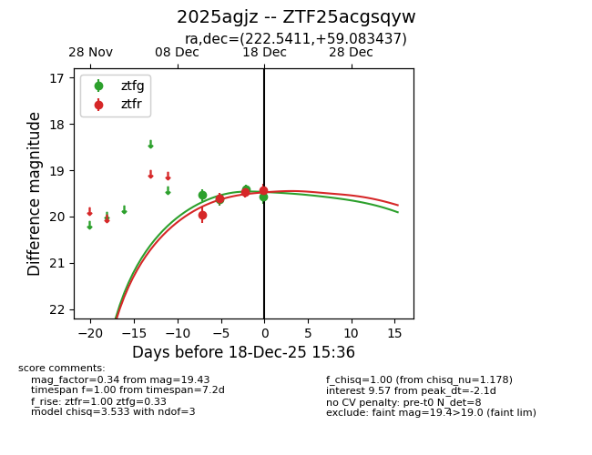
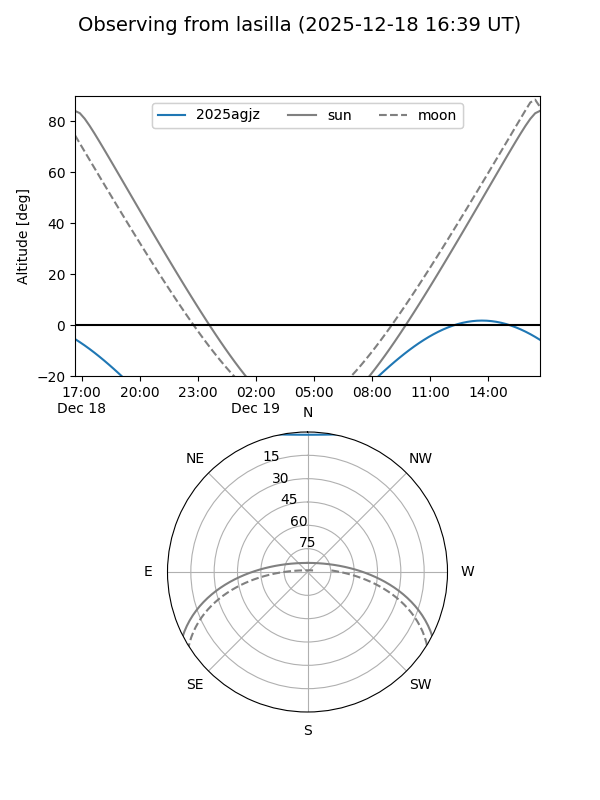
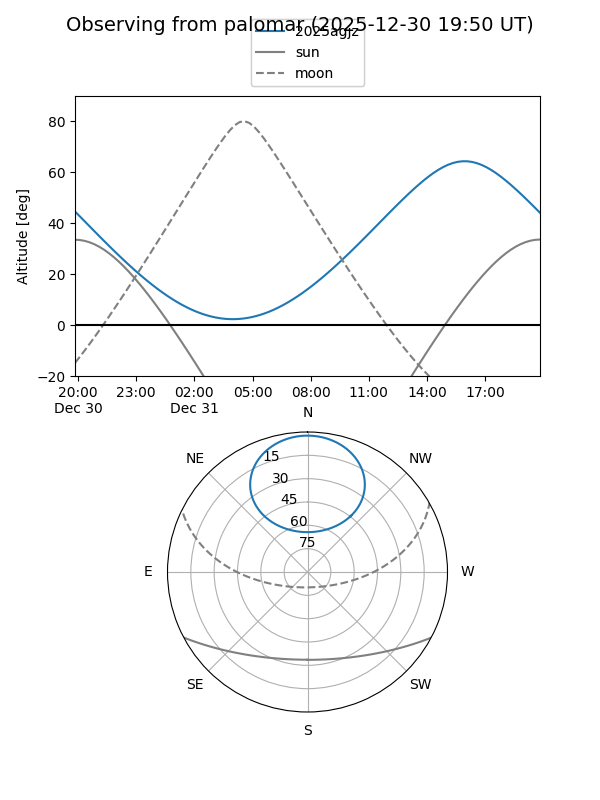

2025agjz
Target 2025agjz at 2025-12-31 16:59
Aliases and brokers:
FINK:
Lasair:
ALeRCE:
TNS:
YSE:
alt names
ZTF25acgsqyw (ztf,fink_ztf)
2025agjz (tns,yse)
Coordinates:
equatorial (ra, dec) = 222.5411,+59.08344
equatorial (HMS+DMS) = 14:50:09.86,+59:05:00.37
galactic (l, b) = (98.4986,+52.04226)
Flags:
Photometry:
last ztfg=19.45, ztfr=19.48
5 ztfg, 5 ztfr detections
Lightcurve

Visibility


Additional plots